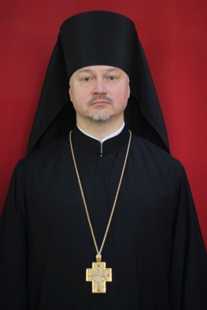
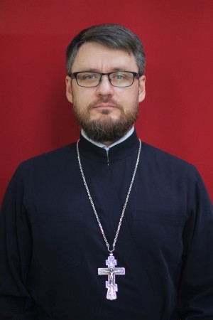
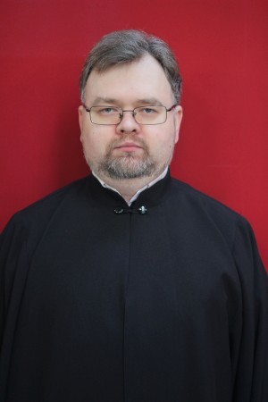

Предыдущий настоятель храма иеромонах Игнатий (Юрченков)
День рождения: 6 августа 1971 г.
Диаконская хиротония: 27 марта 1994 г.
Иерейская хиротония: 24 апреля 1994 г.
Иеромонах Игнатий, (в миру Юрченков Роман Валерьевич), родился в г. Москва в семье военнослужащих.
В 1986 г. окончил 8 классов средней школы № 832 г. Москвы. С 1986-1989 гг. учился в СПТУ № 51 г. Москвы. По окончании училища работал наладчиком станков с ЧПУ на секретном заводе в г. Москве.
В 1990-1992 гг. служил в рядах Вооруженных Сил. По окончании срока службы с 1 июня 1992 г. зачислен послушником в Свято-Троицкий Зеленецкий мужской монастырь Санкт-Петербургской епархии.
1 января 1994 г. по благословению митрополита Санкт-Петербургского и Ладожского Иоанна (Снычёва) пострижен в рясофор с наречением имени Игнатий в честь священномученика Игнатия Богоносца.
27 марта 1994 г. рукоположен в сан диакона, а 24 апреля 1994 г. в сан пресвитера митрополитом Санкт-Петербургским и Ладожским Иоанном (Снычёвым).
В июне 1995 г. перешел в Свято-Троицкий Ипатьевский мужской монастырь Костромской епархии. С 1 декабря 1995 г. почислен за штат с правом перехода в другую епархию. 21 февраля 1997 г. принят в клир Санкт-Петербургской епархии и назначен в число насельников Свято-Троицкого Зеленецкого мужского монастыря. В 2000 г. назначен благочинным монастырского подворья в г. Санкт-Петербурге.
С 1998-2003 гг. учился в Санкт-Петербургской Духовной Семинарии. С 2003 по 2006 гг. учился в Санкт-Петербургской Духовной Академии, по окончании которой за курсовую диссертацию по Сравнительному Богословию «Жизнь Мартина Буцера и его религиозная деятельность на период Страсбургской реформации» удостоен степени Кандидата Богословия.
С 2005-2008 гг. учился в Санкт-Петербургской Академии Постдипломного Педагогического Образования (СПбАППО) по программе «Психология».
В 2007 по 2008 гг. учился в Институте Богословия и Философии (ИБиФ), по окончании которого присуждена степень Бакалавра Теологии.
С 2010 г. преподаватель Санкт-Петербургской Духовной Академии по предмету «Введение в литургическое богословие». С 2010-2011 гг. по совместительству проходил послушание на должности помощника инспектора по воспитательной работе в Санкт-Петербургской Духовной Семинарии и Академии. С 2011 г. преподаватель предмета «Историческая литургика» на Епархиальных курсах религиозного образования и катехизации имени св. прав. Иоанна Кронштадтского.
19 сентября 2011 г. назначен на должность настоятеля храма св. прав. воина Феодора Ушакова.
Награжден набедренником 13 апреля 1998 г., наперстным крестом 24 марта 2008 г., правом ношения палицы за богослужением в 2015 году, наперстным крестом с украшениями 25 апреля 2020 г., орденом преподобного Серафима Саровского III степени 23 октября 2021 г.
20 августа 2024 г. освобожден от должности настоятеля храма и почислен за штат с правом перехода в другую епархию

Настоятель храма иерей Александр Стебенев
День рождения: 25 апреля 1975 г.
Диаконская хиротония: 28 февраля 2015 г.
Иерейская хиротония: 16 декабря 2018 г.
Родился в городе Липецке в православной семье.
После окончания средней школы в 1992 году поступил в Военно-Медицинскую Академию в г. Санкт-Петербурге, которую с отличием окончил в 1998 году.
После выпуска был распределен в Московский Округ Внутренних Войск, где проходил службу в должности врача-психиатра в гарнизонном лазарете. В 2000 году переведен для дальнейшего прохождения службы в той же должности в Санкт-Петербургский Военный Институт Внутренних Войск. В 2003 году уволен в запас по окончании контракта в звании капитана медицинской службы. В дальнейшем продолжил работу в должности врача-психотерапевта в различных лечебно-профилактических учреждениях города Санкт-Петербурга (Медицинская Академия Последипломного образования, Наркологический реабилитационный центр № 1, Клиника неврозов им. акад. И. П. Павлова, Городской психотерапевтический центр, Федеральный медицинский исследовательский центр им. В. А. Алмазова).
В 2011 году поступил на заочное отделение богословского факультета Православного Свято-Тихоновского Гуманитарного Университета, который успешно окончил в 2015 году, получив диплом бакалавра теологии.
25 февраля в день 270-летнего юбилея со дня рождения адмирала Федора Ушакова был рукоположен в иподиакона. 28 февраля того же года митрополитом Санкт-Петербургским и Ладожским Варсонофием рукоположен в диакона.
2 апреля 2015 года указом № 100 митрополита Санкт-Петербургского и Ладожского Варсонофия назначен штатным клириком храма Святого Праведного Воина Федора Ушакова на проспекте Королева.
16 декабря 2018 г. рукоположен в сан пресвитера митрополитом Санкт-Петербургским и Ладожским Варсонофием.
23 октября 2021 г. награжден правом ношения набедренника, 15 мая 2022 г. - правом ношения камилавки.
20 августа 2024 г. назначен настоятелем храма

Диакон Сергий Белов
День рождения: 01 марта 1983 г.
Диаконская хиротония: 12 июля 2020 г.
В 2000 году окончил Гимназию №652. В период с 2000 по 2005 гг. обучался в ГОУ ВПО Российский государственный гидрометеорологический университет. Окончил ВУЗ с присуждением квалификации «морской-инженер» по специальности «морские информационные системы и оборудование».
В 2021 году окончил бакалавриат заочного отделения СПбДА.
В 1995-1996 гг. нес послушание в качестве алтарника при храме Спаса Нерукотворного Образа на Конюшенной площади. С 2012 года пел в молодежном любительском хоре при храме Успения Пресвятой Богородицы на Малой Охте. В 2017-2018 гг. нес послушание в качестве алтарника при том же храме. С 2014 года несет послушание в качестве председателя Ассоциации молодежных любительских хоров в Отделе по делам молодежи СПб епархии. С 2015 года несет послушание в качестве старосты Сводного хора православной молодежи СПб епархии и является сотрудником Отдела по делам молодежи СПб епархии.
С 2001 г. по настоящее время работает в области IT и защиты информации.
12 июля 2020 г. митрополитом Санкт-Петербургским и Ладожским Варсонофием рукоположен в диакона.
С 21 августа 2020 г. назначен штатным клириком храма Святого праведного воина Федора Ушакова на проспекте Королева.

Россия, г. Санкт-Петербург, пр. Королёва, д. 7


+7 (812) 941-40-52

ushakov_church@mail.ru